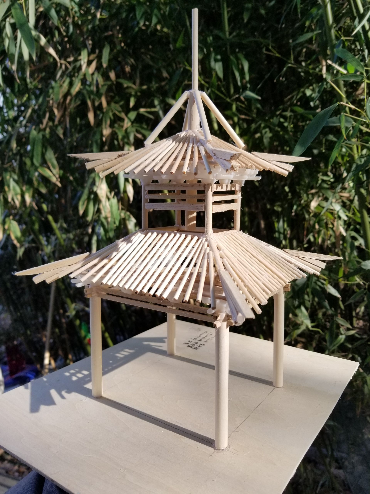
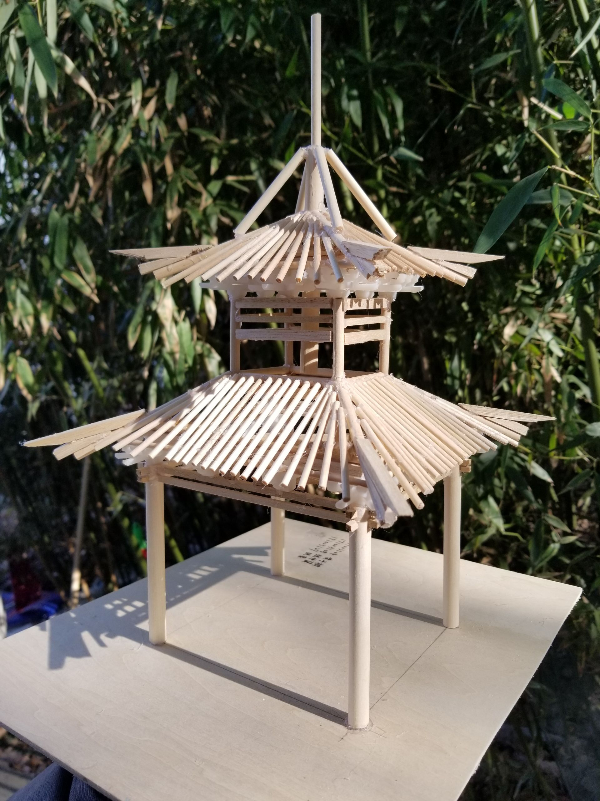

Hi, my name is Zhongyi Zhang. I'm from Suzhou, China. I was a landscape architect. I spent a year to do some landscape designs in China. And now I am currently a student at the University of Michigan School of Information, pursing a Master's degree in User Experience and Human Computer Interaction. I want to be a font-end engineer or UX designer in the future. I believe technology and information combined with art design may help people enhance the living environment.
Linkin 



I love taking photos, this was taken in Glacier National Park in 2016. And because of my landscape architect background, I'm interested in Chinese Historic buildings, especially pavilions. And I made a model of Yuquansi Tongtian pavilion. I also know drawing and calligraphy, they help me illustrate the beautiful world.